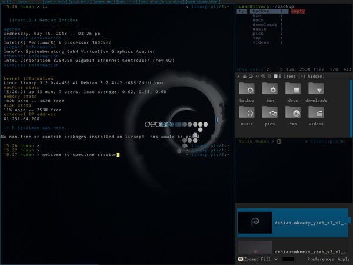

lang fr|gb

spectrwm session
spectrwm is a minimalistic window manager that tries to stay out of the way so that valuable screen real estate can be used for much more important stuff.
It has sane defaults and does not require one to learn a language to do any configuration. It was written by hackers for hackers and it strives to be small, compact and fast.
screenshot
{kind=link}
spectrwm is a tiling window manager, it displays your windows (clients) so that they occupy the entire surface of the desk (tags). clients are organized in different ways (layouts) to optimize the visibility of your applications. layouts are organized around the Master (main zone) and Stack (stacking area from other clients).
statup
spectrwm is launched by ~/bin/start/spectrwm_start.sh.
to modify startup applications, simply edit this file:
components
the spectrwm session is organized with different elements :
- spectrwm: the window-manager itself
- statusbar: display tags, layout, active client title/name and a conky with cpu, mem & disk usage, network traffic and time & date (configurable from ~/.conky/conkyrc_spectrwm).
- Menu spectrwm: available from top-left corner and handled by fbpanel. it includes a complete menu of installed applications, configuration section and a systray (configurable from ~/.config/fbpanel/default or from the menu itself).
configuration
for conky, simply edit its conkyrc:
for fbpanel, you have to edit its configuration file
if you want to add plugins, please visit the dedicated page.
spectrwm configuration is made by editing ~/.spectrwm.conf.
the file is easily understandable and looks like this:
# PLEASE READ THE MAN PAGE BEFORE EDITING THIS FILE!
# http://opensource.conformal.com/cgi-bin/man-cgi?spectrwm
# colors for focussed and unfocussed window borders
# NOTE: all colors in this file are in hex! see XQueryColor for examples
color_focus = rgb:0/68/8b
color_unfocus = rgb:24/24/24
# bar settings
bar_enabled = 1
bar_border_width = 0
bar_border[1] = rgb:0/68/8b
bar_color[1] = grey12
bar_font_color[1] = rgb:0/68/8b
bar_font = snap
bar_action = spectrwm_status.sh
bar_delay = 1
bar_justify = left
bar_at_bottom = 0
stack_enabled = 1
clock_enabled = 0
clock_format = %a %d/%m %I:%M %P
title_name_enabled = 1
title_class_enabled = 0
window_name_enabled = 0
verbose_layout = 0
focus_mode = default
disable_border = 1
border_width = 1
urgent_enabled = 0
# spawn app
program[term] = urxvtcd
program[screenshot_all] = screenshot -a
program[screenshot_wind] = screenshot -w
program[lock] = xscreensaver-command -lock
program[initscr] = initscreen.sh
program[menu] = dmenu_run -fn $bar_font -nb $bar_color -nf $bar_font_color -sb $bar_font_color -sf $bar_color -p exec:
spawn_term = urxvtcd
# dialog box size ratio between .3 and 1
dialog_ratio = 0.3
# Split a non-Xrandr dual head setup into one region per monitor
# (non-standard driver-based multihead is not seen by spectrwm)
# region = screen[1]:1280x1024+0+0
# region = screen[1]:1280x1024+1280+0
# Launch applications in a workspace of choice
# autorun = ws[1]:x-terminal-emulator
# autorun = ws[2]:xxxterm http://www.openbsd.org
# workspace layout
# layout = ws[1]:4:0:0:0:vertical
# layout = ws[2]:0:0:0:0:horizontal
# layout = ws[3]:0:0:0:0:fullscreen
# mod key, (windows key is Mod4) (apple key on OSX is Mod2)
# modkey = Mod1
# Clear key bindings and load new key bindings from the specified file.
# This allows you to load pre-defined key bindings for your keyboard layout.
#keyboard_mapping = ~/.spectrwm_fr.conf
# quirks
# remove with: quirk[class:name] = NONE
# quirk[MPlayer:xv] = FLOAT + FULLSCREEN + FOCUSPREV
# quirk[OpenOffice.org 2.4:VCLSalFrame] = FLOAT
# quirk[OpenOffice.org 3.0:VCLSalFrame] = FLOAT
# quirk[OpenOffice.org 3.1:VCLSalFrame] = FLOAT
# quirk[Firefox-bin:firefox-bin] = TRANSSZ
# quirk[Firefox:Dialog] = FLOAT
# quirk[Gimp:gimp] = FLOAT + ANYWHERE
# quirk[XTerm:xterm] = XTERM_FONTADJ
# quirk[xine:Xine Window] = FLOAT + ANYWHERE
# quirk[Xitk:Xitk Combo] = FLOAT + ANYWHERE
# quirk[xine:xine Panel] = FLOAT + ANYWHERE
# quirk[Xitk:Xine Window] = FLOAT + ANYWHERE
# quirk[xine:xine Video Fullscreen Window] = FULLSCREEN + FLOAT
# quirk[pcb:pcb] = FLOAT
# EXAMPLE: define firefox program and bind to key
# program[firefox] = firefox http://spectrwm.org/
# bind[firefox] = MOD+Shift+b
# livarp default keybinds
program[firefox] = firefox http://arpinux.org/livarp_start
program[ranger] = urxvtcd -e ranger
program[rox] = rox-filer
program[vim] = urxvtcd -e vim
program[geany] = geany
program[mocp] = urxvtcd -e mocp
program[mixer] = urxvtcd -e alsamixer
program[help] = urxvtcd -e spectrwm_keys.sh
bind[firefox] = Mod4+w
bind[ranger] = Mod4+r
bind[rox] = Mod4+Shift+r
bind[vim] = Mod4+e
bind[geany] = Mod4+Shift+e
bind[mocp] = Mod4+z
bind[mixer] = Mod4+v
bind[help] = Mod4+h
keybinds
spectrwm is fully controllable from the keyboard: control, launchers, navigation, tags and clients manipulation...
keybinds are defined in the ~/.spectrwm.conf.
menus:
- spectrwm menu: top-left corner of the screen
- dmenu: Alt+p
control:
- reload spectrwm: Alt+q
- quit spectrwm:Shift+Alt+q or from spectrwm menu:exit
- toggle hide statusbar: Alt+b
windows:
- close client: Alt+x
- previous client: Alt+j ou Alt+Tab
- next client: Alt+k ou Alt+Shift+Tab
- swap previous client: Alt+Shift+k
- swap next client: Alt+Shift+j
- swap master: Alt+Enter
- toggle free client: Alt+t
navigation:
- previous/next busy tag: Alt+Left/Right
- previous/next tag: Alt+Up/Down
- last tag: Alt+a
- view previous/next region: Alt+Shift+Down/Up
- tag client with previous/next screen: Alt+Shift+Left/Right
- display tag 'n': Alt+'n'
- send to tag 'n': Alt+Shift+'n'
layout
- increase/dicrease master: Alt+l/h
- add/remove client from/to master: Alt+./,
- cycle layout: Alt+Space
launchers:
- terminal: Alt+Shift+Enter
- launch ranger: Super+r
- launch rox-filer: Super+Shift+r
- launch firefox: Super+w
- launch vim: Super+e
- launch geany: Super+Shift+e
- music player: Super+z
- volume control: Super+v
for a full list of spectrwm keybinds and capacity, please visit the man.